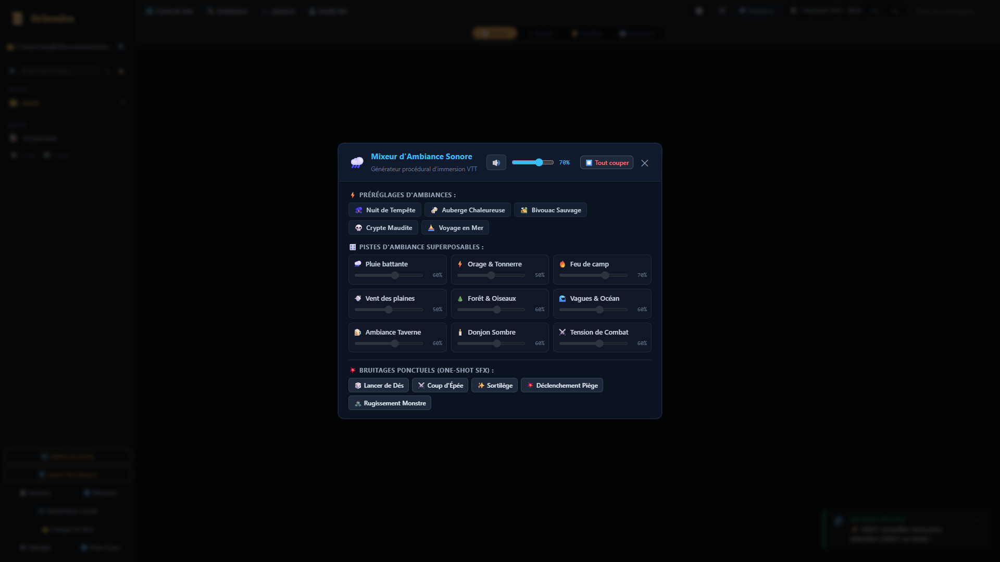

Le Studio Audio & Ambiances Immersives
Plongez vos joueurs au cœur de l'action grâce au moteur audio multi-canaux de Grimoire : intégration native de plus de 300 ambiances Tabletop Audio, double lecteur musical synchronisé, zones sonores spatiales sur la carte et soundboard d'effets spéciaux instantanés.
🎧 Visite du Mixeur Audio
Cliquez sur les numéros dorés pour analyser chaque tranche de mixage.

Volume Principal & Silence Immédiat
Ajustez le volume global de toutes les ambiances d'un coup de curseur. Le bouton rouge Tout couper coupe instantanément le son pour laisser place à la tension dramatique.
Presets d'Ambiance en 1 Clic
Chargez des ambiances pré-configurées : Taverne Animée, Forêt Mystique, Donjon Sombre, Bataille Épique, Tempête en Mer ou Feu de Camp.
Faders & Mixage Multi-Canaux
Chaque piste possède son propre curseur de gain et bouton mute : Pluie battante, Grondement d'orage, Crépitement de braises, Hurlement du vent ou Murmures inquiétants.
Soundboard d'Effets Spéciaux (SFX)
Déclenchez à la volée des bruitages percutants : lame dégainée, éclair foudroyant, porte grinçante, rugissement monstrueux ou déflagration arcanique.
Lecture Continue Hors Modal
Une fois vos pistes calibrées, fermez le panneau : la composition audio continue de tourner en boucle infinie sans accroc pendant que vous naviguez entre vos cartes tactiques et votre éditeur de lore.